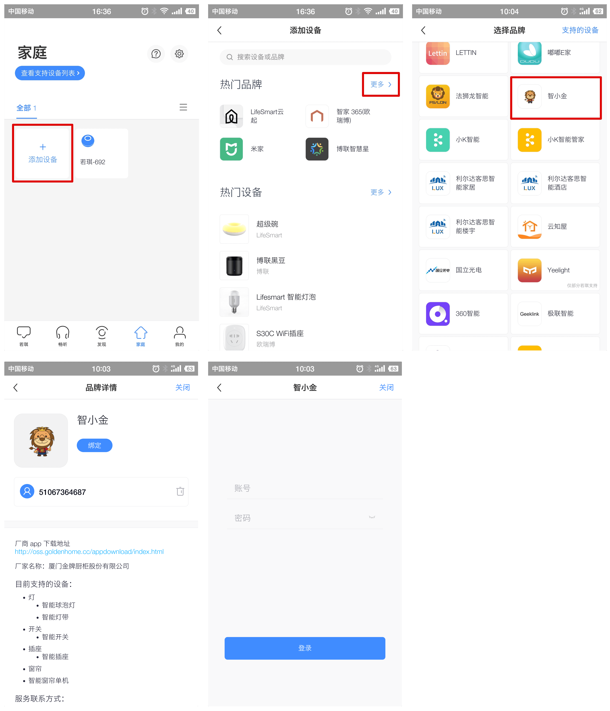

若琪语音音箱技能配置说明
第一步 添加设备
确认您至少已添加一个可以被若琪语音音箱控制的设备，目前可以被控制的设备包括：智能插座、智能灯、智能电烤箱等。

第二步 编辑设备名称
将设备的名称修改成若琪语音音箱容易识别的名字，例如：客厅插座、厨房电烤箱......
* 若琪当前仅支持识别以中文组成的设备名称

第三步 设置若琪
使用若琪App登录并绑定若琪语音音箱。
*若琪当前仅支持中文语言
第四步 添加智能家居技能
在若琪App中，进入到“家庭”页面，选择“添加设备”，点击热门品牌中的“更多”。在选择品牌的列表中找到并选择“智小金”，在新窗口中输入您”智小金“App的账号和密码进行绑定，绑定成功后您的设备将出现在“家庭”页面的设备列表中。

第五步 控制设备
现在，您可以通过若琪语音音箱控制设备了，同时也可以通过若琪APP修改设备名称。
支持的语音指令包括：
若琪，打开客厅插座
若琪，关闭客厅插座